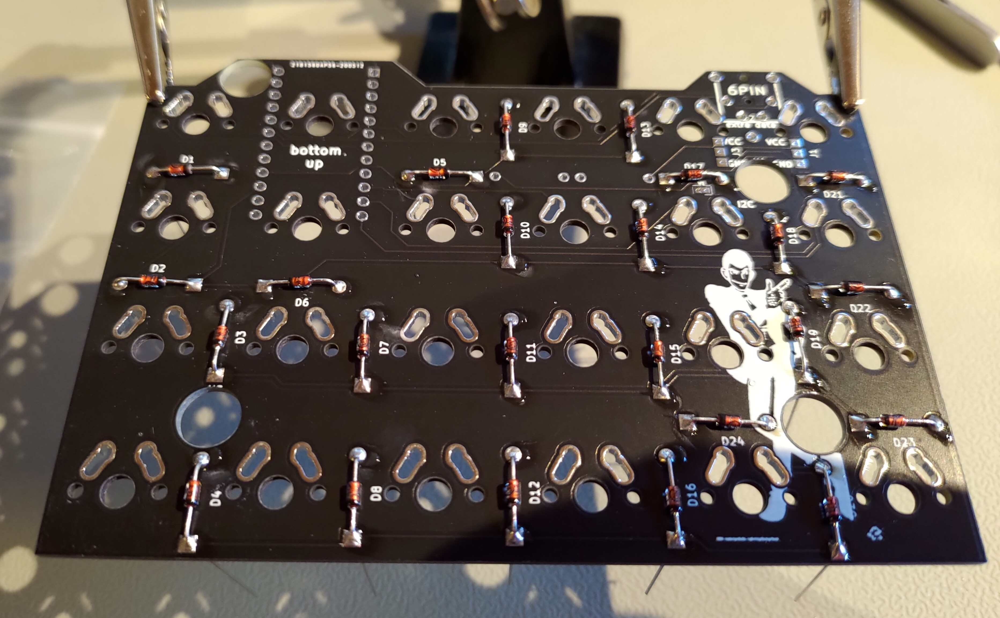

Keyboard: Let's Split
Switches: Gazzew Bobba U4 68g (w/ Super Lube PTFE and films)
Keycaps: ePBT Blanks
There is a very good guide to building the keyboard, which is recommended to follow. It covers everything in detail except flashing the micro controllers. The first thing to do is to solder on diodes, TRRS jacks, headers, and connect jumpers.
Next it is recommended to test the controllers by plugging them in and checking with a multimeter. E.g., the Pro Micro should have around 5V between VCC and RAW. Now is also a good time to flash the firmware onto the controllers. After this is done what is left is to assemble everything.
When building the keyboard I chose to use one Pro micro and one Elite-C micro controller. This is a common choice, since the Elite-C is an upgrade, but unnecessary to have on both halves. One thing to keep in mind is that the two controllers have different bootloaders, and this has to be taken into account when flashing.
When flashing, QMK only builds files with name keymap.c. In the make command the 'keymap' is the name of the folder containing the keymap.c file. This means that when you write,
make KEYBOARD:YOUR_KEYMAP_NAME:BOOTLOADER
this should be done from the top level qmk_firmware directory. See example below for each controller.
There are a few things to keep in mind when flashing the halves,
Before you flash the controllers, copy the default firmware to the new build with,
qmk new-keymab -kb lets_splitNow you have a keymap.c file in ~/qmk_firmware/keyboards/lets_split/keymap/HanssonMagnus and a config.h file. You can edit these files as you please.
Stop the modem manager if this is an issue for you,
systemctl stop ModemManager.serviceCompile the keymap,
sudo make lets_split/rev2:HanssonMagnusFlash the Pro Micro with avrdude,
sudo make lets_split/rev2:HanssonMagnus:avrdudeThe CLI will tell you to reset the controller, this is done by shorting the controller with a pair of tweezers (or similar), you short the RST and GND. When the flash is done you will get the following message,
avrdude: safemode: Fuses OK (E:FD, H:D8, L:FF)
avrdude done. Thank you.
The Elite-C flashing process is similar to the Pro Micro, reset the controller with the reset button on the controller.
sudo make lets_split/rev2:HanssonMagnus:dfuThe Elite-C with dfu will not give you a message when it is done, it will just say,
Bootloader Version: 0x00 (0)
Validating...
18294 bytes used (63.80%)